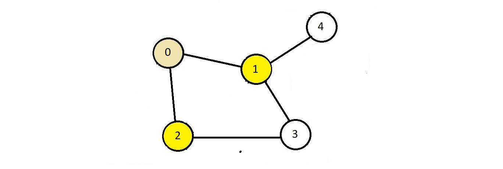

Breadth-First Search (BFS)
- Start with a node, and first, visit all the nodes connected to this node.
Terminologies we need to familiarise ourselves with
- Exploring a vertex (node) :
- Means visiting all the connected vertices.
- Follow the illustration of the graph mentioned below.
We'll use this for understanding the breadth-first search.

- In breadth-first search, we use the queue data structure
- Here, suppose we start with node 0 and put it in the list of visited nodes, then we visit nodes
2 and 1 since they are directly connected to node 0.
- And then gets visited node 3 and 4.
- So, the order of exploring would be 0, 2, 1, 3, 4.
- In breadth-first serach, we visit from left to right all the nodes which lie on the same level.
- Here, node 0 was on one level, followed by nodes 2 and 1, and then nodes 3 and 4.